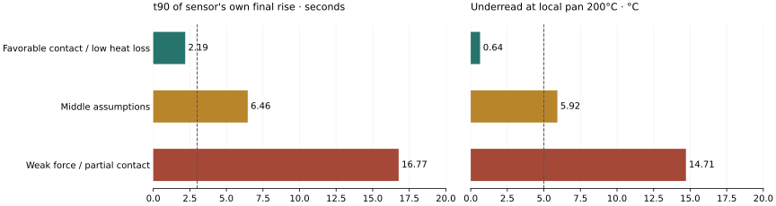

Four parallel Astra workstreams produced a parts-based CAD revision, control interlock code, calibration tooling and induction test preparation. The next physical cartridge has better-defined inputs and tests. It is not yet a qualified control sensor.
Simulation and test preparation only. No cartridge was built, measured or energized. Every hardware validation result remains NOT_RUN. No parts were ordered or changes published.
What is ready
01 · Parts and CAD
Actual RTD and spring dimensions
M222 Pt100, catalog spring, 316L cap and ceramic-bond candidate. Four CAD positions check fit, stroke and the revised wire envelope. Seal selection remains conditional.
Entry and update guards cover pan detection, preheat and heating. Missing, stale or contradictory evidence inhibits heat; recovery cannot automatically restart it. No physical detector backend is enabled.
Prepared force, return, rocking, temperature-error and response procedures; strict import and separate fit/holdout evaluation. Synthetic fixtures test the tools without claiming physical evidence.
Full-skirt eddy-current sensitivity, lead pickup, coil-on/off evaluation, hotspot mapping and leakage/cleaning/thermal-cycle procedures. Missing measurements cannot produce a pass.
The cap remains 0.6 mm above nominal glass. The real 2.3 × 2.1 × 0.9 mm RTD replaces the former 0.4 mm sensor envelope. A 0.15 mm roof, 0.10 mm candidate bond and revised plunger accommodate the supplier's maximum chip body.
The selected spring gives a calculated nominal gross reaction of 0.27 N at flat-pan depression. This uses the supplier's rounded spring rate; seal force, friction, moving weight and lot variation still need measurement. Ample solid-height clearance does not prove reliable return.
Four positions × 22 solids: valid CAD and STEP round-trips, no rigid intersections; explicit spring/stem and spring/wire-envelope checks pass. Flexible envelopes and lead forming remain unqualified.
Actual CAD section projection. Seal, spring and wiring shapes include labeled envelopes; this is not a fabrication approval.
The same parts can be fast or much too slow
Selected geometry does not remove uncertainty in contact conductance and heat loss. These are three conditional simulations, not measurements or a reliability distribution.

Dashed lines show proposed engineering screens: 3 seconds and 5°C. The weak-contact case never reaches 90% of the imposed pan-temperature step within 120 seconds, despite having a finite t90 relative to its own biased final reading.
Condition
t90, own final rise
t90, pan step
Sensor − pan at 200°C
Favorable contact / low heat loss
2.185 s
2.225 s
−0.640°C
Middle assumptions
6.460 s
7.980 s
−5.924°C
0.09 N force / 30% contact area
16.775 s
Not reached in 120 s
−14.712°C
Step: pan 25→100°C, glass/body 25°C. Error case: pan 200°C, glass 80°C, body 60°C. The revised study covers 21,870 mechanics, 5,832 thermal and 486 material sensitivity cases. Contact/loss assumptions remain unmeasured; source properties and proxies are separated in the model notes.
What the interlock proves—and what remains open
The host tests exercise the real guard, state machine and state handlers with mocked hardware outputs. They check missing/stale input, contact loss, acquisition, time wrap, contradictory samples, queued transitions, direct heating entry and runaway-fault priority. Existing EEPROM fault IDs are preserved.
The current firmware intentionally cannot heat without a qualified contact backend. The guard's interface requires independent contact evidence, but no available board signal has been promoted to that evidence. RTD validity and induction pan presence do not prove that the cap touches the pan.
A lower spring-seat force sensor plus plunger position can both stay asserted after a jam with the pan removed. Startup release checks help expose stuck inputs but do not close that failure. A revised load path or another independently qualified contact modality is still required.
Software timing assumes a scheduled control task and honest timestamps. Physical acquisition, interference, latch/driver delay and tank-current extinction require end-to-end measurement. The existing low-temperature burst call remains commented in production; tests do not establish a live burst subsystem.
Induction adds uncertainties the thermal fit cannot remove
The cap's full skirt is included. In the simple imposed axial-field formula, its contribution is about 3.5 times the roof's. At typical drive frequencies the selected geometry falls outside the conservative small-parameter screen, so those rows are extrapolated sensitivities—not predictions or upper bounds.
The prepared sequence first uses a calibrated dummy resistor to isolate electronics susceptibility, then measures the real cap against independent local pan references. Spatial maps check off-center hotspots. Paired subtraction removes linear drift only; it cannot automatically separate nonlinear heating, sensor lag and coherent reference interference.
Temperature-compatible sealing. R 401/30 S is a custom development candidate with a published 210°C range; its inner lip is connected to the hot cap. No model or measurement establishes a safe seal temperature for 250°C operation.
Mechanical completion. Positive cap retention, dent/overload resistance, actual wire selection, Kelvin terminations and strain relief remain unresolved. The CAD clearance check cannot close them.
Bond process. The proposed 0.10 mm Resbond layer needs supplier particle-size/process confirmation, cure control, void/thickness inspection and thermal-cycle coupons.
Independent contact hardware. A detector must reject guide/seal jams and EMI without allowing false contact. Only its fail-closed software interface and host control behavior are implemented.
Measured validation. Force, friction, rocking, thermal tracking, self-heating, interference, spatial hotspots, leakage and combined endurance remain unrun. Calibration transfer must survive an independently acquired dynamic holdout.
Verification and reproducibility
Integrated commands, outcomes and limitations are recorded in verification.md. The original sensitivity study remains preserved as a separate baseline; its hypothetical controller gate must not be confused with the new state-machine interlock.
CAD_PYTHON=/path/to/cadquery-python bash ../parts_revision/run.sh
bash ../bench_validation/run.sh
bash ../induction_validation/run.sh
# See contact_detection/README.md for full host-control verification.